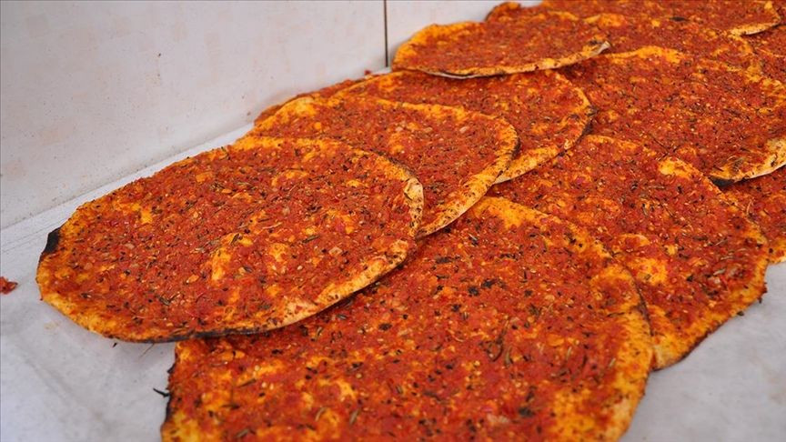

Katık Ekmek
Baharat, biber, salça, biber ve soğan ile hazırlanan biberli ekmek, Hatay’da neredeyse her evin kahvaltı masalarını tamamlayan bir yiyecek türüdür.

Sac Oruğu
i. İçli köfte çeşitlerinden biri olan sac oruğunun baharatlı ve cevizli iç harcıyla tadına doyum olmuyor

Firik Pilavı
Hatay usulü yapılışında daha çok bol tavuk eti kullanılıyor. Bununla birlikte doyurucu ve besleyici firik bulgur ile harmanlanarak çeşitli baharatlar yemeğe eşsiz bir lezzet katıyor.